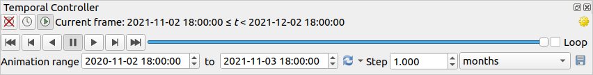
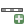

The 2D map view (also called Map canvas) is the central place where maps are displayed.
QGIS opens by default with a single map view (called mainmap),
showing layers in 2D, and tightly bound to the Layers panel.
That window reflects the rendering (symbology, labeling, visibilities…)
you applied to the loaded layers.
When you add a layer (see e.g. Opening Data), QGIS automatically
looks for its CRS. If a different CRS is set by default for the project
(see Project Coordinate Reference Systems) then the layer extent is “on-the-fly”
translated to that CRS, and the map view is zoomed to that extent if
you start with a blank QGIS project.
If there are already layers in the project, no map canvas resize is
performed, so only features falling within the current map canvas extent
will be visible.
Click on the map view and you should be able to interact with it,
panning or zooming to different areas of the map.
Dedicated tools are provided in the Navigation Toolbar and
in the View menu, with handful shortcuts from the keyboard
or the mouse buttons.
Single left click: the map is centered on the clicked point, at the same scale
Hold down the left mouse button and drag the map canvas.
Zoom In
Single left click: the map is centered on the clicked point,
while the scale gets doubled
Drag a rectangle on the map canvas with the left mouse button
to zoom in to an area.
Hold the Alt key to switch to the Zoom Out tool.
Zoom Out
Single left click: the map is centered on the clicked point,
while the scale gets halved
Drag a rectangle on the map canvas with the left mouse button
to zoom out from an area.
Hold the Alt key to switch to the Zoom In tool.
Pan Map to Selection
Pan the map to the selected features of all the selected layers in the
Layers panel.
Zoom To Selection
Zoom to the selected features of all the selected layers in the
Layers panel.
Also available in the layer contextual menu
Zoom To Layer(s)
Zoom to the extent of all the selected layers in the
Layers panel.
Also available in the layer contextual menu
Zoom Full
Zoom to the extent of all the layers in the project
or to the project full extent.
Zoom Last
Zoom the map to the previous extent in history.
Zoom Next
Zoom the map to the next extent in history.
Zoom to Native Resolution
Zoom the map to a level where one pixel of the active raster layer covers
one screen pixel.
Also available in the layer contextual menu
Mouse wheel
Pan map: Hold and drag the mouse wheel.
Zoom: Roll the mouse wheel to zoom in or zoom out.
With Ctrl key pressed while rolling the mouse wheel
results in a finer zoom.
Press the back or forward button to browse the map canvas zoom history.
Keyboard
Pan map: Hold down the Space key and move the mouse.
Press the arrow keys to pan up, down, left and right.
Zoom in: Press PgUp or Ctrl++
Zoom out: Press PgDown or Ctrl+-
Zoom to area: When certain map tools are active (Identify, Measure…),
hold down Shift and drag a rectangle on the map to zoom to that
area. Not compatible with active selection or edit tools.
Right-click over the map and you should be able to Copy coordinates of the clicked point in the map CRS, in WGS84
or in a custom CRS. The copied information can then be pasted in an expression,
a script, text editor or spreadsheet…
To stop the map drawing, press the Esc key. This will halt the refresh of
the map canvas and leave the map partially drawn. It may however take a bit of time
after pressing Esc for the map drawing to halt.
To suspend rendering, click the Render checkbox in the
bottom-right corner of the status bar. When Render
is unchecked, QGIS does not redraw the canvas in response to any of
the usual triggers mentioned earlier. Examples of when you
might want to suspend rendering include:
adding many layers and symbolizing them prior to drawing
adding one or more large layers and setting scale dependency before drawing
adding one or more large layers and zooming to a specific view before drawing
any combination of the above
Checking the Render checkbox enables rendering and
causes an immediate refresh of the map canvas.
QGIS can handle temporal control on loaded layers, i.e. modify the map canvas
rendering based on a time variation. To achieve this, you need:
Layers that have dynamic temporal properties set.
QGIS supports temporal control for different data providers, with custom settings.
It’s mainly about setting the time range in which the layer would display:
raster layers: controls whether to display or
not the layer.
WMTS layers: controls whether the data should be rendered
based on a static time range or following a dynamic temporal range
vector layers: features are filtered based
on time values associated to their attributes
mesh layers: displays dynamically the active dataset
groups values
When dynamic temporal options are enabled for a layer, an
icon is displayed next to the layer in the Layers panel to remind
you that the layer is temporally controlled.
Click the icon to update the temporal settings.
Enable the temporal navigation of the map canvas using the Temporal
controller panel. The panel is activated:
using the Temporal controller panel icon located in the
Map Navigation toolbar
or from the View ► Panels ► Temporal controller panel
menu
The Temporal controller panel has the following modes:

Fig. 11.2 Temporal Controller Panel in navigation mode
Turn off temporal navigation: all the
temporal settings are disabled and visible layers are rendered as usual
Fixed range temporal navigation:
a time range is set and only layers (or features) whose temporal range
overlaps with this range are displayed on the map.
Animated temporal navigation:
a time range is set, split into steps, and only layers (or features)
whose temporal range overlaps with each frame are displayed on the map
Settings for general control of the animation
Frames rate: number of steps that are shown per second
Cumulative range: all animation frames will
have the same start date-time but different end dates and times.
This is useful if you wish to accumulate data in your temporal
visualization instead of showing a ‘moving time window’ across your data.
Set to single layer’s range taken from a time-enabled layer
Fill in the time Step to split the time range.
Different units are supported, from seconds to centuries.
A sourcetimestamps option is also available as step: when selected,
this causes the temporal navigation to step between all available time ranges
from layers in the project. It’s useful when a project contains layers with
non-contiguous available times, such as a WMS-T service which provides images
that are available at irregular dates. This option will allow you to only step
between time ranges where the next available image is shown.
Click the button to preview the animation.
QGIS will generate scenes using the layers rendering at the set times.
Layers display depends on whether they overlap any individual time frame.
The animation can also be previewed by moving the time slider.
Checking the Loop checkbox will repeatedly run the
animation while clicking stops a running animation.
A full set of video player buttons is available.
Horizontal scrolling using the mouse wheel (where supported) with the
cursor on the map canvas will also allow you to navigate, or “scrub”,
the temporal navigation slider backwards and forwards.
Click the Export animation button if you want to generate
a series of images representing the scene. They can be later combined in a
video editor software:
Fig. 11.4 Exporting map canvas animation scenes to images
The filename Template: the #### are replaced with frame
sequence number
Spatial Bookmarks allow you to “bookmark” a geographic location and return to
it later. By default, bookmarks are saved in the user’s profile (as User
Bookmarks), meaning that they are available from any project the user opens.
They can also be saved for a single project (named
Project Bookmarks) and stored within the project file, which can
be helpful if the project is to be shared with other users.
Select the menu option View ►New Spatial Bookmark…,
press Ctrl+B or right-click the Spatial
Bookmarks entry in
the Browser panel and select New Spatial Bookmark.
The Bookmark Editor dialog opens.
To use and manage bookmarks, you can either use the Spatial Bookmarks
panel or Browser.
Select View ►Show Spatial
Bookmark Manager or press Ctrl+7
to open the Spatial Bookmarks Manager panel.
Select View ►Show Bookmarks
or Ctrl+Shift+B to show
the Spatial Bookmarks entry in the
Browser panel.
Double-click on it, or select the bookmark and press the
Zoom to bookmark button.
Double-click on it, drag and drop it to the map canvas, or right-click
the bookmark and select Zoom to Bookmark.
Delete a bookmark
Select the bookmark and click the Delete bookmark button.
Confirm your choice.
Right-click the bookmark and select Delete Spatial Bookmark.
Confirm your choice.
Export bookmarks to XML
Click the Import/Export Bookmarks button and select
Export.
All the bookmarks (user or project) are saved in an xml file.
Select one or more folders (user or project) or subfolders (groups),
then right-click and select Export Spatial Bookmarks….
The selected bookmark subset is saved.
Import bookmarks from XML
Click the Import/Export Bookmarks button and
select Import.
All bookmarks in the XML file are imported as user bookmarks.
Right-click the Spatial Bookmarks entry or one of its folders (user or
project) or subfolders (groups) to determine where to import the
bookmarks, then select Import Spatial Bookmarks.
If performed on the Spatial Bookmarks entry, the bookmarks
are added to User Bookmarks.
Edit bookmark
You can change a bookmark by changing the values in the table. You can
edit the name, the group, the extent and if it is stored in the project or
not.
Right-click the desired bookmark and select Edit Spatial
Bookmark….
The Bookmark Editor will open, allowing you to redefine every
aspect of the bookmark as if you were creating it for the first time.
You can also drag and drop the bookmark between folders (user and
project) and subfolders (groups).
You can manage bookmark actions by right-click on the desired bookmark in the
Spatial Bookmarks Manager. You can also zoom to bookmarks by typing the
bookmark name in the locator.
Decorations include Grid, Title Label, Copyright Label, Image, North Arrow, Scale Bar and Layout
Extents. They are used to ‘decorate’ the map by adding cartographic elements.
The Interval X and Interval Y between the grid
marks, in map units
An Offset X and Offset Y distance of the grid
marks from the bottom left corner of the map canvas, in map units
The interval and offset parameters can be set based on the:
Canvas Extents: generates a grid with an interval that is
approximatively 1/5 of the canvas width
Active Raster Layer resolution
Tick Draw annotations to display the coordinates of
the grid marks and set:
The Annotation direction, ie how the labels would be placed
relative to their grid line. It can be:
Horizontal or Vertical for all the labels
Horizontal and Vertical, ie each label is parallel to the
grid mark it refers to
Boundary direction, ie each label follows the canvas
boundary, and is perpendicular to the grid mark it refers to
The Annotation font (text formatting, buffer, shadow…) using
the font selector widget
The Distance to map frame, margin between annotations and map
canvas limits. Convenient when exporting the map canvas
eg to an image format or PDF, and avoid annotations to be on the “paper” limits.
The Coordinate precision
Click Apply to verify that it looks as expected or OK
if you’re satisfied.
Enter the title text you want to place on the map.
You can make it dynamic using the Insert or Edit an Expression…
button.
Choose the Font for the label using the font selector
widget with full access to QGIS text formatting options. Quickly set the font color and opacity by clicking
the black arrow to the right of the font combo box.
Select the color to apply to the title’s
Background bar color.
Choose the Placement of the label in the canvas: options are
Top left, Top Center (default),
Top Right, Bottom left, Bottom Center
and Bottom Right.
Refine the placement of the item by setting a horizontal and/or vertical
Margin from Edge. These values can be in Millimeters or
Pixels or set as a Percentage of the width or height of the map canvas.
Click Apply to verify that it looks as expected or
OK if you’re satisfied.
Enter the copyright text you want to place on the map.
You can make it dynamic using the Insert or Edit an Expression…
button.
Choose the Font for the label using the font selector
widget with full access to QGIS text formatting options. Quickly set the font color and opacity by clicking
the black arrow to the right of the font combo box.
Choose the Placement of the label in the canvas: options are
Top left, Top Center,
Top Right, Bottom left, Bottom Center,
and Bottom Right (default for Copyright decoration)
Refine the placement of the item by setting a horizontal and/or vertical
Margin from Edge. These values can be in Millimeters or
Pixels or set as a Percentage of the width or height of the map canvas.
Click Apply to verify that it looks as expected or
OK if you’re satisfied.
Select a bitmap (e.g. png or jpg) or SVG image using the
…Browse button
If you have chosen a parameter enabled SVG then you can also set
a Fill or Stroke (outline) color.
For bitmap images, the color settings are disabled.
Set a Size of the image in mm. The width of selected image is used to
resize it to given Size.
Choose where you want to place the image on the map canvas with the
Placement combo box. The default position is Top Left.
Set the Horizontal and Vertical Margin from (Canvas) Edge.
These values can be set in Millimeters, Pixels or as a Percentage of
the width or height of the map canvas.
Click Apply to verify that it looks as expected and OK
if you’re satisfied.
Optionally change the color and size, or choose a custom SVG
Optionally change the angle or choose Automatic to let QGIS determine the
direction
Optionally choose the placement from the Placement combo box
Optionally refine the placement of the arrow by setting a horizontal and/or vertical
Margin from (Canvas) Edge. These values can be in Millimeters or
Pixels or set as a Percentage of the width or height of the map canvas.
Click Apply to verify that it looks as expected and OK if you’re satisfied.
Scale Bar adds a simple scale bar to the map canvas.
You can control the style and placement, as well as the labelling of the bar.
The scale bar respects the active project’s distance unit
as defined in Project properties ► General ► Units for distance measurement.
To add a scale bar:
Select menu option View ► Decorations ► Scale Bar…
to open the dialog
Select the Color of bar by choosing
a fill color (default: black) and an outline color (default: white). The scale
bar fill and outline can be made opaque by clicking on the down arrow to the right
of the color input.
Select the font for the scale bar from the Font of bar combo box
Set the Size of bar in the active unit
Optionally check Automatically snap to round number on resize
to display easy-to-read values
Choose the placement from the Placement combo box
You can refine the placement of the item by setting a horizontal and/or vertical
Margin from (Canvas) Edge. These values can be in Millimeters or
Pixels or set as a Percentage of the width or height of the map canvas.
Click Apply to verify that it looks as expected or OK if you’re satisfied.
Layout Extents adds the extents of map item(s) in print
layout(s) to the canvas. When enabled, the extents of all map items within all print layouts are
shown using a lightly dotted border labeled with the name of the print layout and map item.
You can control the style and labeling of the displayed layout extents.
This decoration is useful when you are tweaking the positioning of map elements such as labels,
and need to know the actual visible region of print layouts.
Fig. 11.12 Example of layout extents displayed in a QGIS project with two print layouts. The print
layout named ‘Sights’ contains two map items, while the other print layout contains one
map item.
To add layout extent(s):
Select View ► Decorations ► Layout Extents to open
the dialog
Optionally change the symbol and labeling of the extents.
Click Apply to verify that it looks as expected and OK
if you’re satisfied.
Tip
Decorations Settings
When you save a QGIS project file, any changes you have made to Grid,
North Arrow, Scale Bar, Copyright and Layout Extents will be saved in the project and restored
the next time you load the project.
Annotations are another type of elements added onto the map canvas to provide
additional information that can not be depicted by the rendered layers.
Unlike labels that rely on attribute values stored
in vector layers, annotations are independent details, stored within the project
file itself.
Two families of annotations are available in QGIS:
Feature annotations: they are actual georeferenced features of text, marker,
line or polygon type stored within a special layer type called “annotation layer”.
They are tied to a particular geographic location, meaning that moving your map,
changing the scale or changing projection won’t cause your annotations to jump
around the map. Rather, they’ll be locked in place to the location you’ve drawn them.
Balloon annotations: these are individuals annotations of text, form or image
type placed inside a bubble. They can be associated to any layer for their visibility,
are drawn on top of the map canvas. The size is dependent from the map canvas scale,
and its position can be anchored.
Tip
Layout the map with annotations
You can print or export annotations with your map to various formats using:
map canvas export tools available in the Project menu
print layout, in which case you need to check
Draw map canvas items in the corresponding map item properties
The Annotations Toolbar provides a set of tools to create and interact
with both families of annotations.
Feature annotations are stored in annotation layers. Unlike conventional
layers, an annotation layer is available only in the current project and can
contain features of different types (text, marker, line, polygon).
The layer has no attributes and no symbology associated, but instead each feature
can be symbolized on an item-by-item basis, through Layer Styling panel.
Two types of annotation layer are available in QGIS:
A common Annotation Layer: you can create one using
the New Annotation Layer tool. It is listed
in the Layers panel, allowing you to control its features’
visibility, move it to show above or below particular layers in your map,
like any common layer.
Double-click the layer and you can access its properties.
The Main Annotation Layer: By default, this is where annotations
are stored when no annotation layer is available in the project or is selected
at creation time. This layer is always drawn on the very top of your map and
you won’t see it listed in the Layers panel alongside the other
layers in your project, meaning that its features are always visible.
The Main Annotation Layer Properties entry on
the Annotations toolbar helps you open its properties dialog.
The properties dialog of an annotation layer provides the following tabs:
Information: a read-only dialog representing an interesting
place to quickly grab summarized information and metadata on the current layer.
This may include the layer extent, count of items per annotation type and total count,
CRS details, …
Source: defines general settings for the annotation layer. You can:
Set a Layer name that will be used to identify the layer
in the project (in the Layers Panel, with expressions, …)
Display the layer’s Assigned Coordinate Reference System (CRS):
you can change the layer’s CRS, selecting a recently used one
in the drop-down list or clicking on Select CRS button
(see Coordinate Reference System Selector). Use this process only if the CRS applied to the
layer is a wrong one or if none was applied.
Rendering:
You can set the Maximum (inclusive) and Minimum
(exclusive) scale, defining a range of scale in which features will be
visible. Out of this range, they are hidden. The Set to current canvas scale button helps you use the current map
canvas scale as boundary of the range visibility.
See Visibility Scale Selector for more information.
Opacity: You can make the underlying layer in
the map canvas visible with this tool. Use the slider to adapt the visibility
of your vector layer to your needs. You can also make a precise definition of
the percentage of visibility in the menu beside the slider.
Blending mode at the Layer level: You can achieve
special rendering effects with these tools that you may previously only
know from graphics programs. The pixels of your overlaying and underlying
layers are mixed through the settings described in Blending Modes.
Apply paint effects on all the layer features with the
Draw Effects button.
Some of these options are accessible from the feature annotation
Symbology properties.
The Feature annotations have dedicated tools for creation depending on their type:
Create Polygon Annotation
Create Line Annotation
Create Marker Annotation
Create Text Annotation at Point
Create Text Annotation along Line
All the usual QGIS shortcuts for creating features apply when creating annotation
items. A line or polygon annotation is drawn by left-clicking once for each vertex,
with a final right mouse click to complete the shape. Snapping can be enabled
while you draw, you can use the Advanced Digitizing Tools to precisely
place vertices, and even switch the drawing tools
to the streaming mode for completely free-form shapes.
Unlike common layers, an annotation layer does not need to be active before you
select its features. Simply grab the Modify Annotations tool and
you will be able to interact with any feature annotation:
Selection: left-click on the annotation.
By default, annotations are rendered in the order of creation,
meaning that recent annotations will be placed on top of older.
You may need to play with the Z-index property of features in order to select
ones they would sit above.
Moving: Left click on a selected annotation item to start moving it.
A right-click or pressing Esc key cancels the move, while a second
left click will confirm the move.
The displacement can also be controlled pressing the cursor keys:
Shift+key for big movement
Alt+key for 1px movement
Geometry modification: for line or polygon annotations, left-click on
a vertex of the geometry, move and click again.
Double-click a segment to add a new vertex.
Delete: Pressing the Del or Backspace key while
an annotation is selected will delete that annotation
the text format properties for text-based annotations.
A text area allows you to construct the string to display using QGIS expression functions.
It is also possible to set the Alignment for text annotation at point
(left, center or right of the text point).
For text annotation at point, also configure whether it should Ignore map rotation
or Rotate with map.
In both cases, a custom Angle can be set for the feature orientation.
For text annotation along a line, configure an Offset from line in the unit
of your choice
Configure a Reference scale: indicates the map scale
at which symbol or text sizes which uses paper-based units (such as millimeters or points) relate to.
The sizes will be scaled accordingly whenever the map is viewed at a different scale.
For instance, a line feature wide of 2mm at 1:2000 Reference scale
will be rendered using 4mm when the map is viewed at 1:1000.
Set a Z-index: a feature with a higher index is placed on top of
features with lower index.
A convenient setting for both feature display and selection.
To add a balloon annotation, select the corresponding tool and click on the map canvas.
An empty balloon is added. Double-click on it and a dialog opens with various
options. This dialog is almost the same for all the annotation types:
At the top, a file selector to fill with the path to an html, svg
or ui file depending on the type of annotation. For text annotation,
you can enter your message in a text box and set its rendering with
the normal font tools.
Fixed map position: when unchecked, the balloon placement
is based on a screen position (instead of the map), meaning that it’s always shown
regardless the map canvas extent.
Linked layer: associates the annotation with a map layer, making it
visible only when that layer is visible.
Map marker: using QGIS symbols,
sets the symbol to display at the balloon anchor position (shown only when
Fixed map position is checked).
Frame style: sets the frame background color, transparency,
stroke color or width of the balloon using QGIS symbols.
Contents margins: sets interior margins of the annotation frame.
Live update allows you to live preview your changes.
Measuring works within projected coordinate systems (e.g., UTM) and unprojected
data. The first three measuring tools behave equally to global project settings:
Unlike most other GIS, the default measurement metric is
ellipsoidal, using the ellipsoid defined in
Project ► Properties… ► General. This is true both
when geographic and projected coordinate systems are defined for the project.
If you want to calculate the projected/planimetric area or distance using cartesian
maths, the measurement ellipsoid has to be set to “None/Planimetric”
(Project ► Properties… ► General). However,
with a geographic (ie unprojected) CRS defined for the data and project, area and
distance measurement will be ellipsoidal.
However, neither the identify tool nor the field calculator will transform your
data to the project CRS before measuring. If you want to achieve this, you have
to use the vector analysis tool: Vector ► Geometry Tools ►
Add Geometry Attributes…. Here, measurement is planimetric, unless
you choose the ellipsoidal measurement.
Click the icon in the Attribute toolbar to begin measurements.
The down arrow near the icon switches between
length, area, bearing or angle.
The default unit used in the dialog is the one set in Project ►
Properties… ► General menu.
For the Measure Line and the Measure Area the
measurements can be done in Cartesian or
Ellipsoidal measure.
Note
Configuring the measure tool
While measuring length or area, clicking the Configuration button
at the bottom of the widget opens the Settings ►
Options ► Map Tools menu, where you can select the rubberband color, the
precision of the measurements and the unit behavior. You can also choose your
preferred measurement or angle units, but keep in mind that those values are
overridden in the current project by the selection made in the
Project ► Properties… ► General menu, and by the
selection made in the measurement widget.
All measuring modules use the snapping settings from the digitizing module
(see section Setting the snapping tolerance and search radius).
So, if you want to measure exactly along a line feature, or around a polygon feature,
first set its layer snapping tolerance.
Now, when using the measuring tools, each mouse click (within the tolerance setting)
will snap to that layer.
The Measure Line measures distances between given points.
The tool then allows you to click points on the map.
Each segment length, as well as the total, shows up in the measure window.
In the measure window, you will see coordinates for all your points and distances.
Keep in mind that the first row will contain only coordinates, as it represents your starting point.
Now it is possible to copy all your line measurements at once to the clipboard
using the Copy button. Clicking the Configuration button
you will access to Measure Tool Copy Settings where you can set up
copy options. To stop measuring, click the right
mouse button.
Note that you can use the drop-down list near the total
to change the measurement units
interactively while working with the measure tool.
This unit is retained for the widget until a new project is created
or another project is opened.
The Info section in the dialog explains how calculations are made
according to the CRS settings available.
Measure Area: Areas can also be measured. In the
measure window, the accumulated area size appears. Right-click to stop drawing.
The Info section is also available as well as the ability to switch between
different area units.
Measure Bearing: You can also measure bearings.
The cursor becomes cross-shaped.
Click to draw the first point of the bearing,
then move the cursor to draw the second point.
The measurement is displayed in a pop-up dialog.
Measure Angle: You can also measure angles.
The cursor becomes cross-shaped.
Click to draw the first segment of the angle you wish to measure,
then move the cursor to draw the desired angle.
The measurement is displayed in a pop-up dialog.
It is also possible to open additional map views whose content could diverge
from the Layers panel current state.
To add a new map view, go to View ►New Map View. A new floating widget, mimicking the main map
view’s rendering, is added to QGIS. You can add as many map views as you need.
They can be kept floating, placed side by side or stacked on top of each
other.
Fig. 11.20 Multiple map views with different settings
At the top of an additional map canvas, there’s a toolbar with the following
capabilities:
Zoom Full, Zoom to Selection
and Zoom to Layer(s) to navigate within the view
Set View Theme to select the map theme
to display in the map view. If set to (none), the view will follow
the Layers panel changes.
View settings to configure the map view:
Synchronize view center with main map:
syncs the center of the map views without changing the scale.
This allows you to have an overview style or magnified map which follows
the main canvas center.
Synchronize view to selection: same as
zoom to selection
Scale
Rotation
Magnification
Synchronize scale with the main map scale.
A Scale factor can then be applied, allowing you to have
a view which is e.g. always 2x the scale of the main canvas.
Show annotations
Show cursor position
Show main canvas extent
Show labels: allows to hide labels regardless
they are set in the displayed layers’ properties
Maps you make can be layout and exported to various formats using the
advanced capabilities of the
print layout or report.
It’s also possible to directly export the current rendering, without
a layout.
This quick “screenshot” of the map view has some convenient features.
To export the map canvas with the current rendering:
Go to Project ► Import/Export
Depending on your output format, select either
Export Map to Image…
or Export Map to PDF…
The two tools provide you with a common set of options.
In the dialog that opens:
Choose the Extent to export: it can be the current
view extent (the default), the extent of a layer or a custom extent
drawn over the map canvas.
Coordinates of the selected area are displayed and manually editable.
Enter the Scale of the map or select it from the
predefined scales: changing the scale will
resize the extent to export (from the center).
Set the Resolution of the output
Control the Output width and Output height
in pixels of the image: based by default on the current resolution
and extent, they can be customized and will resize the map extent
(from the center).
The size ratio can be locked, which may be particularly convenient
when drawing the extent on the canvas.
Draw active decorations: in use
decorations (scale bar, title, grid, north
arrow…) are exported with the map
Append georeference information (embedded or
via world file): depending on the output format, a world file of
the same name (with extension PNGW for PNG images, JPGW
for JPG, …) is saved in the same folder as your image.
The PDF format embeds the information in the PDF file.
When exporting to PDF, more options are available in the
Save map as PDF… dialog:
Include vector feature information in the
GeoPDF file: will include all the geometry and attribute
information from features visible within the map in the output
GeoPDF file.
Simplify geometries to reduce output file
size:
Geometries will be simplified while exporting the map by removing
vertices that are not discernibly different at the export
resolution (e.g. if the export resolution is 300dpi, vertices
that are less than 1/600inch apart will be removed).
This can reduce the size and complexity of the export file (very
large files can fail to load in other applications).
Set the Text export: controls whether text labels are
exported as proper text objects (Always export texts
as text objects) or as paths only (Always export texts
as paths).
If they are exported as text objects then they can be edited in
external applications (e.g. Inkscape) as normal text.
BUT the side effect is that the rendering quality is decreased,
AND there are issues with rendering when certain text settings
like buffers are in place.
That’s why exporting as paths is recommended.
Click Save to select file location, name and format.
When exporting to image, it’s also possible to
Copy to clipboard the expected result of the above
settings and paste the map in another application such as
LibreOffice, GIMP…


 Copy coordinates of the clicked point in the map CRS, in WGS84
or in a custom CRS. The copied information can then be pasted in an expression,
a script, text editor or spreadsheet…
Copy coordinates of the clicked point in the map CRS, in WGS84
or in a custom CRS. The copied information can then be pasted in an expression,
a script, text editor or spreadsheet… Render checkbox in the
bottom-right corner of the status bar. When
Render checkbox in the
bottom-right corner of the status bar. When  icon is displayed next to the layer in the Layers panel to remind
you that the layer is temporally controlled.
Click the icon to update the temporal settings.
icon is displayed next to the layer in the Layers panel to remind
you that the layer is temporally controlled.
Click the icon to update the temporal settings. Temporal controller panel icon located in the
Map Navigation toolbar
Temporal controller panel icon located in the
Map Navigation toolbar Animated temporal navigation:
a time range is set, split into steps, and only layers (or features)
whose temporal range overlaps with each frame are displayed on the map
Animated temporal navigation:
a time range is set, split into steps, and only layers (or features)
whose temporal range overlaps with each frame are displayed on the map Settings for general control of the animation
Settings for general control of the animation Cumulative range: all animation frames will
have the same start date-time but different end dates and times.
This is useful if you wish to accumulate data in your temporal
visualization instead of showing a ‘moving time window’ across your data.
Cumulative range: all animation frames will
have the same start date-time but different end dates and times.
This is useful if you wish to accumulate data in your temporal
visualization instead of showing a ‘moving time window’ across your data. button, this can be defined as:
button, this can be defined as: button to preview the animation.
QGIS will generate scenes using the layers rendering at the set times.
Layers display depends on whether they overlap any individual time frame.
button to preview the animation.
QGIS will generate scenes using the layers rendering at the set times.
Layers display depends on whether they overlap any individual time frame.
 Export animation button if you want to generate
a series of images representing the scene. They can be later combined in a
video editor software:
Export animation button if you want to generate
a series of images representing the scene. They can be later combined in a
video editor software:
 ,
press Ctrl+B or right-click the
,
press Ctrl+B or right-click the  Spatial
Bookmarks entry in
the Browser panel and select New Spatial Bookmark.
The Bookmark Editor dialog opens.
Spatial
Bookmarks entry in
the Browser panel and select New Spatial Bookmark.
The Bookmark Editor dialog opens.


{kind=link}
{kind=link}
{kind=link}
 Grid allows you to add a coordinate grid and coordinate
annotations to the map canvas.
Grid allows you to add a coordinate grid and coordinate
annotations to the map canvas.
 Title Label allows you to decorate your map with a Title.
Title Label allows you to decorate your map with a Title.
{kind=link}

 Image allows you to add an image (logo, legend, ..) on the map canvas.
Image allows you to add an image (logo, legend, ..) on the map canvas.
{kind=link}

 combo box
combo box by choosing
a fill color (default: black) and an outline color (default: white). The scale
bar fill and outline can be made opaque by clicking on the down arrow to the right
of the color input.
by choosing
a fill color (default: black) and an outline color (default: white). The scale
bar fill and outline can be made opaque by clicking on the down arrow to the right
of the color input. Layout Extents adds the extents of map item(s) in print
layout(s) to the canvas. When enabled, the extents of all map items within all print layouts are
shown using a lightly dotted border labeled with the name of the print layout and map item.
You can control the style and labeling of the displayed layout extents.
This decoration is useful when you are tweaking the positioning of map elements such as labels,
and need to know the actual visible region of print layouts.
Layout Extents adds the extents of map item(s) in print
layout(s) to the canvas. When enabled, the extents of all map items within all print layouts are
shown using a lightly dotted border labeled with the name of the print layout and map item.
You can control the style and labeling of the displayed layout extents.
This decoration is useful when you are tweaking the positioning of map elements such as labels,
and need to know the actual visible region of print layouts.
{kind=link}
{kind=link}
 New Annotation Layer tool. It is listed
in the Layers panel, allowing you to control its features’
visibility, move it to show above or below particular layers in your map,
like any common layer.
Double-click the layer and you can access its properties.
New Annotation Layer tool. It is listed
in the Layers panel, allowing you to control its features’
visibility, move it to show above or below particular layers in your map,
like any common layer.
Double-click the layer and you can access its properties. Select CRS button
(see Coordinate Reference System Selector). Use this process only if the CRS applied to the
layer is a wrong one or if none was applied.
Select CRS button
(see Coordinate Reference System Selector). Use this process only if the CRS applied to the
layer is a wrong one or if none was applied. Set to current canvas scale button helps you use the current map
canvas scale as boundary of the range visibility.
See Visibility Scale Selector for more information.
Set to current canvas scale button helps you use the current map
canvas scale as boundary of the range visibility.
See Visibility Scale Selector for more information. Create Polygon Annotation
Create Polygon Annotation Create Line Annotation
Create Line Annotation Create Marker Annotation
Create Marker Annotation Modify Annotations tool and
you will be able to interact with any feature annotation:
Modify Annotations tool and
you will be able to interact with any feature annotation: Text Annotation for custom formatted text
Text Annotation for custom formatted text HTML Annotation to place the content of an
HTML Annotation to place the content of an  SVG Annotation to add an
SVG Annotation to add an  Form Annotation: useful to display attributes
of a vector layer in a customized
Form Annotation: useful to display attributes
of a vector layer in a customized 

 Edit properties of the annotation. Same as double-clicking the annotation.
Edit properties of the annotation. Same as double-clicking the annotation. Delete the annotation
Delete the annotation
 Field Calculator
Field Calculator area,
area,  bearing or
bearing or  angle.
The default unit used in the dialog is the one set in menu.
angle.
The default unit used in the dialog is the one set in menu. Cartesian or
Cartesian or


{kind=link}

 Zoom Full,
Zoom Full,  Zoom to Selection
and
Zoom to Selection
and  Zoom to Layer(s) to navigate within the view
Zoom to Layer(s) to navigate within the view Set View Theme to select the map theme
to display in the map view. If set to
Set View Theme to select the map theme
to display in the map view. If set to  View settings to configure the map view:
View settings to configure the map view: Synchronize view to selection: same as
zoom to selection
Synchronize view to selection: same as
zoom to selection Export Map to Image…
Export Map to Image… Export Map to PDF…
Export Map to PDF…